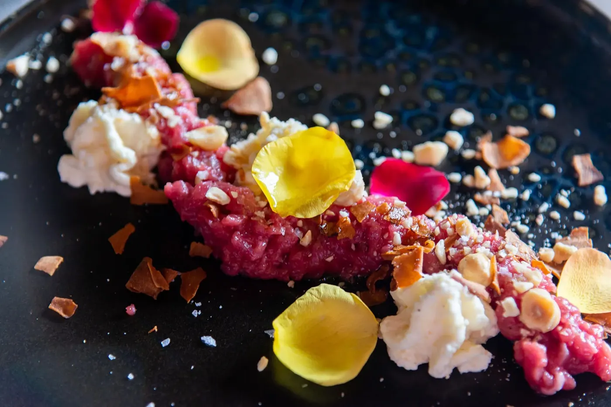

Antipasti
Fassona al coltello, polpo scottato, guancia brasata al Negroamaro.
Da provare: From Piemonte With Love
Antipasti · appunto n° 01
al coltelloFrom Piemonte With Love: tartare di Fassona tagliata al coltello, spuma di Parmigiano stravecchio, nocciole IGP, chips di topinambur.
Polpetto: polpo scottato, tortino di patate, polvere di olive di Gaeta.
Cheek to Cheek: guancia brasata al Negroamaro, patate affumicate.
Parmigiana Light: melanzane alla scapece, robiola di Roccaverano.
si comincia da qui